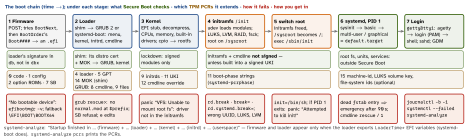

linux · folio
In one line: Firmware (UEFI) runs a loader from the ESP; the loader loads the
kernel + initramfs and hands over a command line; the initramfs makes
the real root reachable (drivers, LUKS, LVM), mounts it and switches root to
systemd as PID 1, which walks targets to default.target. Secure Boot
checks each stage’s signature; the TPM records each stage’s hash.
Download PDF Print view LaTeX source


Firmware — BIOS vs UEFI
| legacy BIOS | UEFI | |
|---|---|---|
| disk | MBR, sector 0: boot code, 4 × 16-byte partition entries at 446, 0x55AA at 510; 32-bit LBA ⇒ 2 TiB at 512-byte sectors | GPT; sector 0 holds a protective MBR (one type 0xEE entry); backup GPT at the end of the disk |
| loader | MBR code → GRUB core.img in the gap before partition 1 (leave ≥1023 KiB) or a BIOS boot partition (GPT, EF02) | a PE .efi on the ESP (FAT, type C12A7328-…); BLS: mount it at /boot or /efi, not /boot/efi |
| choice | the setup menu’s device list | NVRAM Boot#### entries + BootOrder; BootNext = once; BootCurrent = this boot (efibootmgr) |
\EFI\BOOT\BOOTX64.EFI is the spec’s removable-media default (BOOTAA64.EFI on arm64); most firmware also falls back to it on internal disks(unverified).
Secure Boot — keys, shim, MOK, SBAT, lockdown
- PK (one; the owner’s, usually the OEM; none = setup mode, SB off) authorises KEK changes; KEK signs updates to db (allowed certs, hashes) and dbx (revoked). An image runs only if
dbvouches anddbxdoes not. - shim, signed by Microsoft’s UEFI CA, embeds the distro’s cert. It tries the firmware’s
LoadImage(); if refused, checks the next stage against its own cert and the MOK list, deniesdbx/MOKX/SBAT hits, and gives GRUB a protocol to verify the kernel. - MOK = your key:
mokutil --import key.der, reboot, confirm in MokManager. DKMS signs modules with it (mok_signing_keyin/etc/dkms/framework.conf). - SBAT: a
.sbatCSV (component, generation, vendor…); shim refuses anything below theSbatLevelminimum. Why: BootHole (CVE-2020-10713) cost 3 certs + 150 hashes indbx≈ a third of its space. - Lockdown (Debian switches it on under SB; upstream
lockdown=integrity|confidentiality): no unsigned modules or kexec, no unencrypted hibernation, no/dev/mem.
2026: the Microsoft 2011 CAs expire
| Microsoft cert | in | expires | replaced by |
|---|---|---|---|
| Corporation KEK CA 2011 | KEK | 24 Jun 2026 | Corporation KEK 2K CA 2023 |
| UEFI CA 2011: shim, 3rd-party loaders, option ROMs | db | 27 Jun 2026 | UEFI CA 2023 + Option ROM UEFI CA 2023 |
| Windows Production PCA 2011 (Windows loader) | db | 19 Oct 2026 | Windows UEFI CA 2023 |
Expiry ends signing, not booting: shims already signed keep booting. From Oct 2025 to the June expiry Microsoft returned every shim signed by both CAs; a 2023-only shim boots only where db holds UEFI CA 2023 — KEK/db updates come from LVFS (fwupdmgr update). Check: mokutil --db, sbverify --list shimx64.efi.
Boot loaders
- GRUB 2 reads file systems, LVM, LUKS itself.
grub.cfgis generated (update-grub/grub2-mkconfig) from/etc/default/grub+/etc/grub.d/:GRUB_CMDLINE_LINUXgoes into every entry,_DEFAULTonly into the default (not recovery). Upstream, os-prober is off by default. Under SB every module outsidecore.imgand every kernel must be signed. 2.14 (14 Jan 2026): BLS + UKI loading, Argon2 for LUKS2, TPM2 key protector. grub rescue>:core.imgran but could not loadnormalfrom$prefix(moved/boot, new UUID) —set prefix=… root=…,insmod normal,normal.- Fedora (since 30): GRUB’s menu comes from BLS snippets, one per kernel, in
/boot/loader/entries/. - systemd-boot: UEFI-only; reads only the ESP and XBOOTLDR — a file system the firmware can read, usually VFAT. Type #1 entries
/loader/entries/*.conf, Type #2 UKIs in/EFI/Linux/, plus Windows, EFI shell, firmware setup.eedits,dsets the default; boot counting renamesentry+3-0.confon each try.bootctl status.
After a panic
kdump: crashkernel=256M reserves RAM, kexec -p loads a capture kernel that exposes the dead one as /proc/vmcore (ELF); test with SysRq-c. pstore: ERST / UEFI variables → /sys/fs/pstore → systemd-pstore → journal.
The kernel command line — who reads which word
| kernel | root=UUID=… rootfstype= rootflags= · ro (default without an initramfs) / rw · rootwait · init= · rdinit= · console=ttyS0,115200 · quiet · loglevel= · panic=10 (reboot after 10 s) · nomodeset · lockdown= · crashkernel= · module.param=v |
| initramfs | dracut: rd.luks.uuid= rd.lvm.lv= rd.shell rd.debug · initramfs-tools: debug |
| systemd | systemd.unit= · systemd.log_level=debug · systemd.mask=; rd.-prefixed = initrd only |
| PID 1 | unknown words without a dot: k=v → init’s environment, others → argv; all after -- → argv |
Read it back in /proc/cmdline; the limit is 256–4096 characters, per architecture.
How the kernel picks PID 1
Whichever runs is PID 1 for life: if it exits, panic “Attempted to kill init!”.
initramfs and switch root
- A (compressed) cpio unpacked into rootfs (tmpfs/ramfs); concatenated archives overwrite earlier files. Early microcode is an uncompressed cpio placed first (
kernel/x86/microcode/GenuineIntel.bin,AuthenticAMD.bin). - Debian 13: initramfs-tools, shell scripts
init-top→init-premount→local-*→init-bottom;update-initramfs -u. Fedora, RHEL, Ubuntu Desktop 25.10+: dracut, systemd inside:sysroot.mount→initrd-root-fs.target→initrd.target→initrd-switch-root.service;dracut -f. - rootfs could never be unmounted, so
switch_rootdeletes the initramfs files, moves the new root over/, chroots and execs init — same PID 1. Linux 7.0 (2026) puts an empty nullfs under rootfs: plainpivot_root(".", ".")+umount2(".", MNT_DETACH)now works.
Breaking in
| dracut | rd.break = shell just before switch root, root on /sysroot; rd.break=pre-mount, pre-pivot, … |
| initramfs-tools | break= top · modules · premount (default) · mount · mountroot · bottom · init |
| systemd ≥ 258 | rd.systemd.break= pre-udev · pre-basic · pre-mount · pre-switch-root (default); systemd.break= on the host |
| systemd | systemd.unit=rescue.target (1) · emergency · systemd.debug_shell (tty9) |
| kernel | init=/bin/sh: shell as PID 1, no systemd, / read-only — mount -o remount,rw /, sync before reset |
rescue.target: base system, all mounts, root shell, no services (gettys conflict with it). emergency.target: console shell, no other mounts or services; entered when local-fs.target fails — typically an fstab device gone, after the 90 s device timeout. Fix: nofail (wanted, not required), x-systemd.device-timeout=10s.
UKI and measured boot
A UKI is one PE: systemd-stub + .linux (only required section) + .osrel .cmdline .initrd .ucode .dtb .sbat .pcrsig …; .profile = several profiles (systemd 257). One signature covers initrd + cmdline; with SB on and a .cmdline, typed overrides are ignored. ukify build --pcr-private-key=… adds a signed PCR 11 policy. systemd-cryptenroll --tpm2-device=auto binds no PCRs unless told (--tpm2-pcrs=7) — or that signed PCR 11 policy, which survives kernel updates.
Traps
- GRUB without
superusers+password_pbkdf2(they lock the CLI and editing) on an unencrypted disk:e,init=/bin/sh= root. Secure Boot does not stop it — the cmdline is unsigned (a UKI’s.cmdlineis not). - New kernel, stale initramfs or
grub.cfg→ old kernel boots, or a panic. root=/fstabby/dev/sdX: names move between boots — useUUID=.